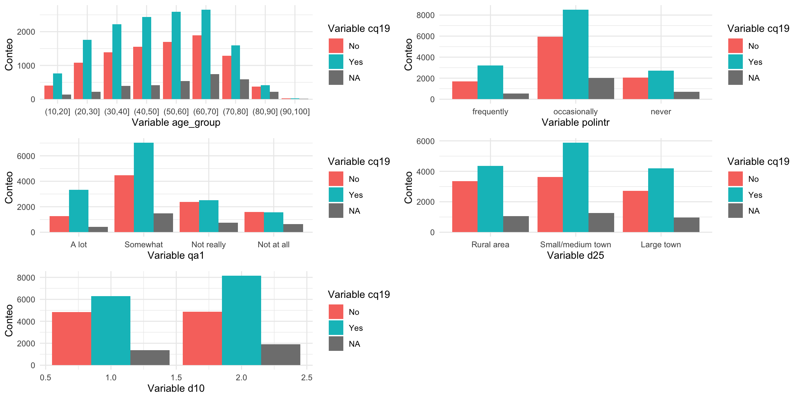
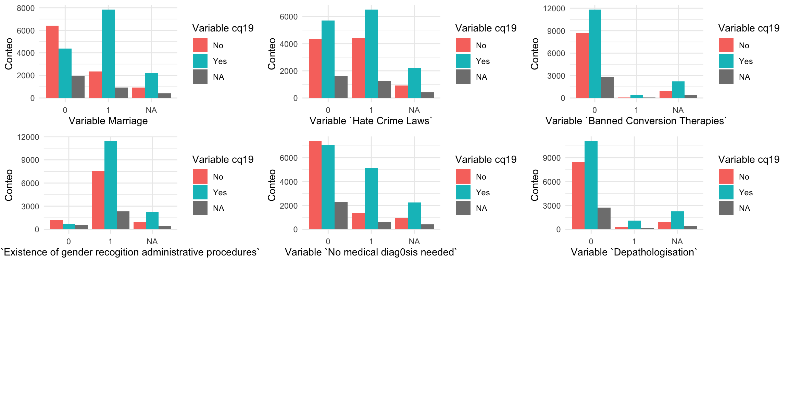
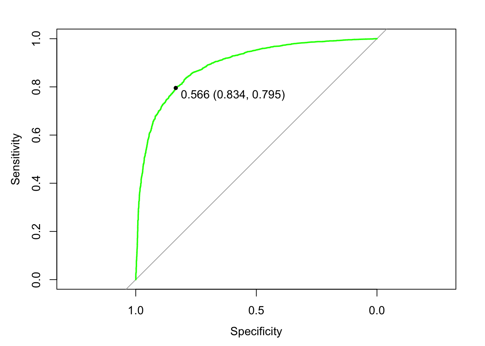

From 2012 to 2019, surveys were conducted at the European Union level focusing on aspects such as discrimination existing in the EU. In 2019, one of the questions was: “Do you think that transgender people should be able to change their civil documents to match their inner gender identity?” The objective of this work is to detect which variables influence whether an individual responds positively or negatively to this question.
Attaching package: 'mice'
The following object is masked from 'package:stats':
filter
The following objects are masked from 'package:base':
cbind, rbind
library(ggplot2)library(gridExtra)
Attaching package: 'gridExtra'
The following object is masked from 'package:dplyr':
combine
library(caret)
Loading required package: lattice
Attaching package: 'caret'
The following object is masked from 'package:purrr':
lift
Loading databases
Our main database is the EU survey conducted in 2019. Then, we added some variables on country level. First, a GINI index database, which shows the value of the index for each country. Second, more specifically about LGBT+ rights in the EU countries, a database which includes data regarding whether a country has legal homosexual marriage, procedures for trans people name or legal sex change, hate crime laws, etc. This database is from ILGA-Europe and the Rainbow Europe Map and Index 2019.
# Main database# data <- read_dta("ZA7575.dta")data <-read_dta("Data/ZA7575.dta")# GINI index databasegini <-read_csv("eu_gini_coef.csv")
Rows: 350 Columns: 8
── Column specification ────────────────────────────────────────────────────────
Delimiter: ","
chr (6): DATAFLOW, LAST UPDATE, freq, indic_il, geo, OBS_FLAG
dbl (2): TIME_PERIOD, OBS_VALUE
ℹ Use `spec()` to retrieve the full column specification for this data.
ℹ Specify the column types or set `show_col_types = FALSE` to quiet this message.
# LGBTphobia databaseilga <-read_xlsx("ilga.xlsx", sheet =2)ilga <- ilga |>filter(CONTINENT =="EUROPE")
Merging together Countries database
Now, we merge both GINI and ILGA databases together to create a ‘countries’ database.
There are over 600 columns in the original database, so we selected only a few that were relevant to the topic, as well as sociodemographic variables.
selected_data <- data |>select( uniqid, isocntry, # nationality keep d11, # age d70, # life satisfaction -recode below DK == NA polintr, # political interest -recode below DK == NA qa1, # globalization scale 1-4, convert 5 to NA # qa5a,# qa7,# qa8,# qa9,# qa11,# qa12,# qa13,# qa14,# qa17, sd1_7, # do you know someone who is transgender. # sd2_1, sd2_2, sd2_3, sd2_4, sd2_5, sd2_6, sd2_7, sd2_8, sd3, qc1_4, qc1_8, qc2_1:qc2_14, # recode to 1 for discrimination == yes qc2_15, # recode to 0. discriminatino == no qc2_16, # recode to NA, impute missing data. DONT KNOW# qc3,# qc4, qc5_1, qc5_3, qc6_1r, qc6_2r, qc6_3r, qc6_10r, # is there discrimination towards... qc7, qc9_1,qc9_4, qc9_5, qc9_10, qc12_1r, qc12_2r, qc12_6r, qc12_10r, qc12_11r,# qc13_1r, qc13_2r, qc13_3r, qc13_4r, qc13_5r, qc13_6r, qc13_7r, qc13_8r, qc13_9r, qc13_10r, qc13_11r, qc13_12r, qc13_13r, qc13_14r, qc13_15r, qc15_1:qc15_3, qc17_1:qc17_5, qc18_1r, qc18_2r, qc18_3r, qc19, # TARGET VARIABLE qc20, d1, # keep, scale from 0-10, remove 11, 12# d7, d10, # gender keep d8, # keep education years d15a, # convert to factor. occupation d25, # keep type of city # d40a, d40b, d40c, d43a, d43b, d60, # financial keep d62_1, # keep internet at home. calculate average d63, # class keep. as factor d72_1, d72_2, # keep. does my voice count p3r, # paradata p5, # paradata p4 # paradata)selected_data <- selected_data |>rename(geo = isocntry) |>left_join(names, by ="geo")
Cleaning missing data
Regarding missing data, we drop out some variables for having too many NAs and impute the rest of varibles we will use. We decide not to impute the target variable to check how NAs distribution change.
Now, we will visualize some plots crossing the answers in QC19 to other variables.
age_group- Age. In younger ages more people tend to answer ‘yes’, which means, more people are in favor of allowing trans people to change their documents. As the age increases, the ‘yes’ answer is less likely, but still over 50%. The number of NAs also increase with age, with a peak between 60 and 70 years old.
sd3 - Religion. La mayoría de personas de la muestra se consideran católicas. De éstas, un 56% está a favor frente un 43% en contra. La identidad en la cual hay más personas en contra, con un 57%, es orthodox christian. In the other hand, there are more individuals who agree who are Agnostic and atheists (Sikh too but there are very few cases in the sample, it’s not representative).
sd1_7 - Friend/acquaintance who is trans. A 89.8% of europeans don’t have a trans friend or aqcuaintance. However, from the people who don’t know a trans person, 80% of them are in favor of trans people changing their document, a much higher percentage than the 57% between the people who do know a trans person.
qc2_recode - Suffered discrimination. Most people haven’t suffered discrimination. The amount of people who is for and against the target question is very similar in both groups.
polintr - Political interest. More people who never get involved in political topics answered ‘don’t know’ proportionally than in the rest of categories. Thy’re also the individuals with a higher rate of ‘no’ answers. There are more people who answer ‘no’ and have a frequent interest in politics compared to people who have an ocasional interest.
qa1 - Opinion on international trade. People who consider they benefit a lot from international trade allowed by the EU tend to be more positive regarding our target variable. However, as the perception of trade decreases, so does the amount of people who are in favor, as well as people who don’t answer.
d25 - Type of city. There is more people against trans people changing their documents in rural areas, as well as in large towns compared to medium-sized cities.
d10 - Gender. More women than men answered ‘yes’ in the target variable.
school_group- Age when stopped education. This variable can be colineal with age. People who abandoned education very young are less suportive. The older the age, the more the support.
d63 - Subjective social class. A 27% of people define themselves as working class, more than lower middle class. The most common one is middle class. Only 0,6% of people consider themselves higher class. The least supportive class is working class, and as the class level increases so does the support.
No Yes
Working class 46.05472 53.94528
Lower middle class 43.04813 56.95187
Middle class 37.84870 62.15130
Upper middle class 30.13393 69.86607
Higher class 24.34211 75.65789
variables <-c("age_group", "polintr", "qa1", "d25", "d10")# Lista para almacenar los gráficosplots <-list()# Generar gráficos para cada variablefor (variable in variables) { plot <-ggplot(recoded_data, aes_string(x = variable, fill ="qc19")) +geom_bar(position ="dodge") +labs(x =paste("Variable", variable), y ="Conteo", fill ="Variable cq19") +theme_minimal() plots[[variable]] <- plot}
Warning: `aes_string()` was deprecated in ggplot2 3.0.0.
ℹ Please use tidy evaluation idioms with `aes()`.
ℹ See also `vignette("ggplot2-in-packages")` for more information.
# Mostrar los gráficos en una cuadrículacowplot::plot_grid(plotlist = plots, nrow =3, ncol =2)

Countries descriptive analysis
geo - By country. We observe that the least suporting country is Hungary with a 84% of people against, meanwhile the most supporting one is Spain.
Marriage. 42% of the European countries allow homosexual marriage. From countries which don’t, there’s a majority of people (59%) who are against trans people documentation change. However, in countries which do allow homosexual marriage, have a majority of 76% in favor.
Gini coefficient value. At first glance, there doesn’t seem to be a clear tendency. Visually we can’t detect right now wheter a higher or lower gini score is related to more or less support.
Hate crime laws. More than half of the European countries have hate crime laws (54%). In this case, both groups of countries have a similar response ratio, with a 3% more of people being in favor of our target question in the countries with these laws.
Banned conversion therapies. Only a 3% of countries had banned them in 2019. There’s a big difference between both groups. In countries were they’ve been banned, a 85% of people agrees with allowing trans people change their documentation.
Existence of gender recogition administrative procedures. They are present in a 81% of countries. In countries where they don’t exist, a 62% of people are against; meanwhile, a 60% of people are on favor on countries where they do.
No medical diagnosis needed for documentation changes. Only a 30% of countries allowed this in 2019. In countries where they allow it, a 79% of people is in favour, compared to the 48% of countries where they don’t.
Dephatologisation. Only 6% of countries had specific laws regarding the dephatologisation of trans identities. In these few countries there’s also a much higher acceptance: 80% in favour.
It’s easy to tell that anti-discrimination laws are reflected in an increase in the acceptance of transgender individuals in the population of these countries.
# By countryggplot(data = recoded_data, aes(x = geo, fill =factor(qc19))) +geom_bar(position ="fill")+labs(x ="País", y ="Proporción", fill ="Valor en qc19") +theme_minimal() +theme(axis.text.x =element_text(angle =45, hjust =1))
variables <-c("Marriage", "`Hate Crime Laws`", "`Banned Conversion Therapies`", "`Existence of gender recogition administrative procedures`", "`No medical diag0sis needed`", "`Depathologisation`")# Lista para almacenar los gráficosplots <-list()# Generar gráficos para cada variablefor (variable in variables) { plot <-ggplot(recoded_data, aes_string(x = variable, fill ="qc19")) +geom_bar(position ="dodge") +labs(x =paste("Variable", variable), y ="Conteo", fill ="Variable cq19") +theme_minimal() plots[[variable]] <- plot}# Mostrar los gráficos en una cuadrículacowplot::plot_grid(plotlist = plots, nrow =3, ncol =3)

Modeling
In this part, we will build multivariate logistic regression models to estimate the effects our predictors have on the outome variable. We have included mixed-effect models, in which the random effects will be countries, age groups, levels of educational attainment, religion and city type.
Our outcome variable, qc19, measures the odds/probability that an individual is in favor of changing the laws to allow transgender people the right to change their civil documents. In other words, this variable can be used to measure transphobia, which is defined as the dislike of or prejudice against transgender people.
Here are the various predictor variables we have chosen to include in the models. The data were taken from the 2019 survey conducted by the European Union.
life satisfaction– factor d70
“Very,” “Somewhat,” “Not really,” or “Not at all satisfied”
politcial interest– factor polintr
“Frequently,” “Occasionally,” or “Never” talk about politics
opinion on globalization– factor qa1
Globalization is benefitting me “a lot,” “somewhat,” “not really,” or “nor at all”
Split training/testing data
We split our data into a training and testing set. The training set will get 70% of data. This will allow us to test our model accuracy later with ‘new’ data.
library(caret)set.seed(1234)in.train <-createDataPartition(recoded_data$qc19, p = .7, list = F)training.data <- recoded_data[in.train[,1], ]testing.data <- recoded_data[-in.train[,1], ]nrow(training.data)
[1] 19208
nrow(testing.data)
[1] 8230
Binomial logistic models
According to the models below, life satisfaction has a strong effect on an individual’s opinion about transgender rights. The model results show that respondents who said that they are “not very” and “not at all” satisfied with their life are much more likely to answer “No” to the question about giving transgender people the right to change their civil documents. The coefficients show that both negative responses have a similar effect on the odds that they will answer Yes/No. Respondents who answered “somewhat satisfied” are also more likely to answer “No” but not by much.
Other predictors Age, Political Interest, and Country also show a strong effect on the outcome.
Including all our variables into the model, we observe many aren’t significant. We reduce the variables until we select only those which are.
The following objects are masked from 'package:tidyr':
expand, pack, unpack
# reversing the order of levels for knowing a trans person. No is base.recoded_data$know_transperson <-factor(recoded_data$sd1_7, levels =c("No", "Yes") )levels(recoded_data$know_transperson)
library(sjPlot)sjPlot::plot_model(model2, type ="pred", terms ="sd3", ci.lvl =0.95) +theme_classic() +labs(x ="Religion",y ="Probability of Yes answer",subtitle ="Given their nationality, Sikhs have largest range at 95% confidence level " )
Call:
glm(formula = qc19 ~ d70 + qa1 + d63 + sd3 + sd1_7 + d8 + qc1_4 +
qc1_8 + qc6_1r + qc6_2r + qc6_3r + qc6_10r + qc7 + qc9_1 +
qc5_1 + qc12_10r + qc15_1 + qc15_2 + qc15_3 + qc17_2 + qc17_5 +
qc20 + d1 + d11 + d8 + d10 + qc2_recode + sd1_7 + `Hate Crime Laws` +
`Existence of gender recogition administrative procedures` +
`No medical diag0sis needed` + Depathologisation + OBS_VALUE,
family = binomial, data = training.data)
Deviance Residuals:
Min 1Q Median 3Q Max
-3.3021 -0.5910 0.2163 0.5036 2.6090
Coefficients:
Estimate
(Intercept) 2.602856
d70Somewhat -0.015385
d70Not very -0.276238
d70Not at all -0.367115
qa1Somewhat -0.181776
qa1Not really -0.228656
qa1Not at all -0.236876
d63Lower middle class 0.089709
d63Middle class 0.082606
d63Upper middle class 0.088555
d63Higher class 0.456223
sd3Orthodox Christian -0.231696
sd3Prostetant 0.172251
sd3Other Christian 0.053989
sd3Jewish 0.356969
sd3Muslim - Shia -0.257408
sd3Muslin - Sunni -1.188755
sd3Other Muslim -0.287762
sd3Sikh -0.475398
sd3Buddhist 0.055279
sd3Hindu 0.731217
sd3Atheist 0.327691
sd3Agnostic 0.244832
sd1_7No -0.282201
d8 0.010404
qc1_4 -0.070254
qc1_8 0.048874
qc6_1r 0.257750
qc6_2r 0.054300
qc6_3r -0.035605
qc6_10r 0.100485
qc7 -0.016143
qc9_1 -0.017383
qc5_1 -0.243401
qc12_10r 0.098650
qc15_1 -0.277469
qc15_2 -0.118625
qc15_3 -0.195802
qc17_2 -0.144030
qc17_5 -0.211069
qc20No -2.667956
d1 -0.018140
d11 0.003846
d10 0.278511
qc2_recode -0.191367
`Hate Crime Laws`1 -0.219831
`Existence of gender recogition administrative procedures`1 -0.230906
`No medical diag0sis needed`1 0.694527
Depathologisation1 0.865374
OBS_VALUE 0.022709
Std. Error z value
(Intercept) 0.427717 6.085
d70Somewhat 0.059795 -0.257
d70Not very 0.087411 -3.160
d70Not at all 0.146639 -2.504
qa1Somewhat 0.068733 -2.645
qa1Not really 0.080570 -2.838
qa1Not at all 0.090543 -2.616
d63Lower middle class 0.077143 1.163
d63Middle class 0.060627 1.363
d63Upper middle class 0.104337 0.849
d63Higher class 0.287261 1.588
sd3Orthodox Christian 0.086390 -2.682
sd3Prostetant 0.082523 2.087
sd3Other Christian 0.115139 0.469
sd3Jewish 0.515373 0.693
sd3Muslim - Shia 0.406041 -0.634
sd3Muslin - Sunni 0.342043 -3.475
sd3Other Muslim 0.361255 -0.797
sd3Sikh 1.252999 -0.379
sd3Buddhist 0.522137 0.106
sd3Hindu 0.757112 0.966
sd3Atheist 0.095070 3.447
sd3Agnostic 0.076766 3.189
sd1_7No 0.090177 -3.129
d8 0.004416 2.356
qc1_4 0.034445 -2.040
qc1_8 0.032587 1.500
qc6_1r 0.058418 4.412
qc6_2r 0.043505 1.248
qc6_3r 0.035433 -1.005
qc6_10r 0.038557 2.606
qc7 0.011368 -1.420
qc9_1 0.024053 -0.723
qc5_1 0.084917 -2.866
qc12_10r 0.026233 3.760
qc15_1 0.034460 -8.052
qc15_2 0.039351 -3.015
qc15_3 0.037248 -5.257
qc17_2 0.034943 -4.122
qc17_5 0.030701 -6.875
qc20No 0.056085 -47.570
d1 0.010594 -1.712
d11 0.001410 2.728
d10 0.048040 5.798
qc2_recode 0.069586 -2.750
`Hate Crime Laws`1 0.058060 -3.786
`Existence of gender recogition administrative procedures`1 0.107963 -2.139
`No medical diag0sis needed`1 0.068076 10.202
Depathologisation1 0.121361 7.131
OBS_VALUE 0.007491 3.031
Pr(>|z|)
(Intercept) 1.16e-09 ***
d70Somewhat 0.796953
d70Not very 0.001576 **
d70Not at all 0.012296 *
qa1Somewhat 0.008178 **
qa1Not really 0.004540 **
qa1Not at all 0.008892 **
d63Lower middle class 0.244875
d63Middle class 0.173032
d63Upper middle class 0.396026
d63Higher class 0.112245
sd3Orthodox Christian 0.007319 **
sd3Prostetant 0.036861 *
sd3Other Christian 0.639142
sd3Jewish 0.488534
sd3Muslim - Shia 0.526117
sd3Muslin - Sunni 0.000510 ***
sd3Other Muslim 0.425706
sd3Sikh 0.704385
sd3Buddhist 0.915685
sd3Hindu 0.334145
sd3Atheist 0.000567 ***
sd3Agnostic 0.001426 **
sd1_7No 0.001751 **
d8 0.018468 *
qc1_4 0.041393 *
qc1_8 0.133665
qc6_1r 1.02e-05 ***
qc6_2r 0.211985
qc6_3r 0.314972
qc6_10r 0.009158 **
qc7 0.155600
qc9_1 0.469873
qc5_1 0.004153 **
qc12_10r 0.000170 ***
qc15_1 8.15e-16 ***
qc15_2 0.002574 **
qc15_3 1.47e-07 ***
qc17_2 3.76e-05 ***
qc17_5 6.20e-12 ***
qc20No < 2e-16 ***
d1 0.086826 .
d11 0.006365 **
d10 6.73e-09 ***
qc2_recode 0.005958 **
`Hate Crime Laws`1 0.000153 ***
`Existence of gender recogition administrative procedures`1 0.032456 *
`No medical diag0sis needed`1 < 2e-16 ***
Depathologisation1 1.00e-12 ***
OBS_VALUE 0.002435 **
---
Signif. codes: 0 '***' 0.001 '**' 0.01 '*' 0.05 '.' 0.1 ' ' 1
(Dispersion parameter for binomial family taken to be 1)
Null deviance: 19868 on 14638 degrees of freedom
Residual deviance: 11445 on 14589 degrees of freedom
(4569 observations deleted due to missingness)
AIC: 11545
Number of Fisher Scoring iterations: 5
threshold =0.6# set the threshold here probabilities <-predict(modelo, newdata = testing.data, type ="response")predictions <-as.factor(ifelse(probabilities >= threshold, "Yes", "No"))roc <- pROC::roc(testing.data$qc19, probabilities, na.rm =TRUE)
Setting levels: control = No, case = Yes
Setting direction: controls < cases
sens <- roc$sensitivities #include sensitivities in test dataspec <- roc$specificitiesexp(model7$coefficients)
(Intercept)
15.56447180
d70Somewhat
0.99568017
d70Not very
0.76191109
d70Not at all
0.69128481
qa1Somewhat
0.84951288
qa1Not really
0.81042740
qa1Not at all
0.80099607
d63Lower middle class
1.10533145
d63Middle class
1.09542017
d63Upper middle class
1.06363179
d63Higher class
1.61835200
sd3Orthodox Christian
0.78993855
sd3Prostetant
1.12131323
sd3Other Christian
1.03005237
sd3Jewish
1.41325666
sd3Muslim - Shia
0.74664820
sd3Muslin - Sunni
0.29094103
sd3Other Muslim
0.72973408
sd3Sikh
0.55335100
sd3Buddhist
1.03442931
sd3Hindu
1.86774831
sd3Atheist
1.32121108
sd3Agnostic
1.21607416
sd1_7No
0.74380459
d8
1.01034592
qc1_4
0.92812155
qc1_8
1.04893499
qc6_1r
1.30315039
qc6_2r
1.06168518
qc6_3r
0.96346103
qc6_10r
1.10798198
qc7
0.98381254
qc9_1
0.98662707
qc5_1
0.74842628
qc5_3
1.18269203
qc12_10r
1.10559674
qc15_1
0.76208491
qc15_2
0.88923331
qc15_3
0.82214272
qc17_2
0.86256714
qc17_5
0.81166489
qc20No
0.06948703
d1
0.98117368
d11
1.00388001
qc2_recode
0.84083408
Marriage1
1.11015967
`Hate Crime Laws`1
0.81528257
`Existence of gender recogition administrative procedures`1
0.77134291
`No medical diag0sis needed`1
1.80989488
Depathologisation1
2.30500067
OBS_VALUE
1.02339524
plot(roc, col='green', print.thres=TRUE)

roc$levels
[1] "No" "Yes"
confusionMatrix(predictions, testing.data$qc19)
Confusion Matrix and Statistics
Reference
Prediction No Yes
No 2248 832
Yes 392 2791
Accuracy : 0.8046
95% CI : (0.7945, 0.8143)
No Information Rate : 0.5785
P-Value [Acc > NIR] : < 2.2e-16
Kappa : 0.6081
Mcnemar's Test P-Value : < 2.2e-16
Sensitivity : 0.8515
Specificity : 0.7704
Pos Pred Value : 0.7299
Neg Pred Value : 0.8768
Prevalence : 0.4215
Detection Rate : 0.3589
Detection Prevalence : 0.4918
Balanced Accuracy : 0.8109
'Positive' Class : No
d70 - Life Satisfaction: From the summary, the relevance of the “not very” and “not at all” satisfaction levels is clearly evident. Specifically, those who reported being “not very” satisfied with their life show a 28% lower likelihood of supporting transgender individuals changing their documents compared to those who are very satisfied. This disparity further increases for those who are “not at all” satisfied with their life, with a 38% discrepancy compared to those who are completely satisfied. This result supports the hypothesis that individuals who are less satisfied with their life may exhibit greater hostility towards their surroundings, potentially influencing their inclination to support rights for individuals perceived as different from themselves.
d63 - Social Class: Speaking about social stratification, we observe that only the highest level of social class appears to be significant. Specifically, it seems that the uppermost segment of the social scale is 2.24 times more supportive of transgender individuals changing their documents compared to the working class. These findings are not surprising, as higher social classes are often associated with higher levels of education and culture, which may make them more open and inclined to support civil rights.
sd3 - Religion: Now let’s consider religion. In this case, we see very different results. Indeed, we notice that being Protestant, atheist, or agnostic entails greater consensus in favor of the possibility for transgender individuals to change their identity on documents. Conversely, those who adhere to religions considered more conservative, such as Orthodox Christians and particularly Sunni Muslims, are less supportive of endorsing this type of right.
sd1_7 - Having friends or acquaintances who are transgender: Similarly, these results appear quite logical. Individuals who do not have any transgender friends or acquaintances are approximately 25% less likely to support the change of identity on transgender individuals’ documents. Indeed, lacking direct, firsthand contact with transgender individuals may lead to underestimating the importance of this need and not perceiving it as an urgent issue.
d8 - Education: In this case as well, much like we observed for social class, higher education appears to be positively associated with greater support. In fact, each additional year spent in full-time education increases the likelihood of supporting the right in question by 1%.
qc1 - Discrimination: Regarding the perception of discrimination in one’s own country, the results seem to be somewhat conflicting and, consequently, surprising. In fact, it appears that regarding discrimination related to sexual orientation, the more rare such discrimination is perceived to be, the less support there is for this right for transgender individuals. However, when it comes to discrimination against transgender people, the more this discrimination is perceived as rare, the greater the support for this right.
qc6 - Having a person from certain groups in the highest elected political position: In this case, the results become entirely logical. Indeed, we notice that the more comfortable one feels with having gay, lesbian, or bisexual individuals in top political positions, the greater the support for the right to change identity on transgender individuals’ documents (increasing by approximately 28%). The same applies to groups of individuals belonging to minority ethnicities (in this case, the percentage is about 9%). As for having transgender individuals in top political roles, although with a not too high p-value, we can state that feeling more comfortable with these individuals in leadership positions leads to an increased support of about 6% for the aforementioned right.
qc5_1. Shared content online about discrimination incidents. People who have done this in the last 12 months seem to have a lower chance of supporting the target question. This might be related to supporting some other kinds of discrimination that aren’t LGBT related.
qc5_3 - Joined an association or campaign agains discrimination. People who have joined an association in the last 12 months are 12% more likely to answer positively to the target question.
qc12_10r - How comfortable would you be with a gay, lesbian or bisexual coworker. When people answer they would be more comfortable, on a scale from 1 to 3, each 1 unit increase means a 8% increase in the chance of supporting trans people documentation change. This is the only variant of the question that was significant for the model.
Now about three statements regarding LGBT equality:
qc15_1 - Gay, lesbian and bisexual people should have the same rights as heterosexual people. When people answer higher values in the scale (disagree, totally disagree, 1 unit increase in the variable) the probability of answering positively to the target question lowers by -27%.
qc15_2 - There’s nothing wrong in same-sex relationships. As people answer more in disagree, the chance of supporting the target variable decreases.
qc15_3 - Same sex marriage should be allowed in Europe. This question is a scale. Each 1 unit increase in the scale (from totally agree to agree, to disagree and totally disagree) is a 10% increase on people answering negatively to the target question. However this one is the statement with less impact in the model.
qc17_2 - School should educate about ethnic origin or skin colour. The answers are in a scale (1: totally agree, 4: totally disagree). As people disagree more, there’s a 14% decrease in the chance of them supporting trans people documentation change.
qc17_5 - School should educate about being intersex. When people disagree more with this statement, the probability of supporting the target question decreases.
qc20 - Believe that documents should have a third option for gender. When people answers no to that question, it’s a 83% chance decrease in people being supportive of trans people changing their documents.
d1 - Ideology. As people identify more to the right, the support decreases. 1 unit increase in the ideology scale is a 3% decrease in support for trans people changing their documentation.
d11- Age. As age increases, there’s a slight increase in supportiveness. However in the descriptive analysis we saw how the oldest people were the less supportive. This might be due to people being more supportive in middle age but then decreasing in older ages.
qc2_recode - Experienced discrimination. People who have experienced discrimination is 13% less likely to be supportive. This might be due to discrimination linked to certain social groups who are less likely to be supportive. Discrimination for experiencing LGBTphobia specifically wasn’t significant for the model.
Legalised homosexual Marriage. Population from countries where there’s legal homosexual marriage is slightly more likely to support trans people documentation change.
Hate Crime Laws. In countries where there are hate crime laws, it’s a bit less likely for the population to be supportive.
Existence of gender recognition procedures. People who live in countries with these kind of laws are 27% less likely to support trans people.
These results might be becase many countries have these laws and it doesn’t seem to be linked to the support of the population.
However, in countries with more progressive laws with have a focus and recognition of the problems trans people face, population seems to be more supportive:
No medical diagnosis needed. People who live in countries where trans people don’t need medical diagnosis to follow certain procedures are 1.8 times more likely to be supportive.
Depathologisation laws. People who live in countries with specific dephatologisation laws towards transgender identities are 2.26 times more likely to answer positively to our target question than those who don’t. However only 2 countries have these kind of laws in 2019.
And lastly, for the GINI index:
OBS_VALUE - GINI index value. People who live in countries with a higher GINI index value are sllightly more likely to be supportive. Per each 1 unit increase in the index value, someone is 1% more likely to support trans people changing their documentation.
Random forest
The random forest model below shows a fair predictive accuracy but not much better than random chance. The accuracy when compared with the testing data was only 67%. Due to it’s low accuracy rate and the difficulty in interpretation, we have decided that the best model for prediction is the logistic model.
According to this random forest model, the most important variable is whether someone believes that there should be a third option on passports and birth certificates besides Male and Female. Second most important was whether someone agrees with the statement: “Same sex marriges should be allowed in Europe.” Age also appears to be important.
In contrast to the logistic model, some variables are not considered important. Knowing someone who is transgender is not considered important for random forest. Neither are religion and life satisfaction.